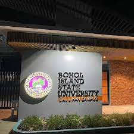

The Bohol Island State University (BISU) was born on October 14, 2009, after her Excellency Gloria Macapagal-Arroyo signed into law Republic Act 9722, a.k.a.
History
Its inception, House Bill No. 5638, was ardently pushed by Representatives Edgar M. Chatto, Roberto C. Cajes, and Adam Relson L. Jala of the First, Second, Third Districts respectively and by its First President, Dr. Elpidio T. Magante.
Being the realization of the Boholano aspiration, the Bohol Island State University is mandated to primarily provide advanced education, engineering, agriculture, fisheries, environment, arts and sciences, accountancy, cooperative, business and entrepreneurship, technology, and other relevant fields of study.
The birth of BISU also gave birth to its sixth and youngest satellite campus. The Balilihan Campus was formerly an extension class of the Tagbilaran City Campus which started accepting enrollees in the First Semester of A.Y. 2006-2007. R.A. 9722, the same law that converted CVSCAFT to BISU, categorically declared Balilihan as one of the satellite campuses of BISU.
Information Services
This service encompasses all information which is made available through bulletins, announcements after flag rituals, brochures, electronic media, orientation activities and trainings.
Student Affairs Office shall disseminate relevant information for the holistic development of the clients.
Student Affairs
Recognizing the importance of students, the student affairs office is geared towards a more empowered studentry through different activities and undertakings that they themselves initiate, plan and carry out.
It is the primary frontline office of the university in its relations with the students. It oversees the implementation of policies, rules, and regulations that support the academic pursuits and total development of students.
This is a service office, in the sense that it serves and looks after the interests of students. SAO is the official communication link with the student body, administration, and general public in matters concerning student welfare and development, student activities, and student discipline.
Counseling Services
This service is concerned with providing individual and group counseling to students who seek assistance.
The “referrals” who are being referred by administrators, family members, parents and teachers who are in need of assistance that could affect the student’s educational, emotional, spiritual and social well-being.
It aims to help the individual to develop potentials and become aware of limitations which are vital in making decisions and right choices in life.